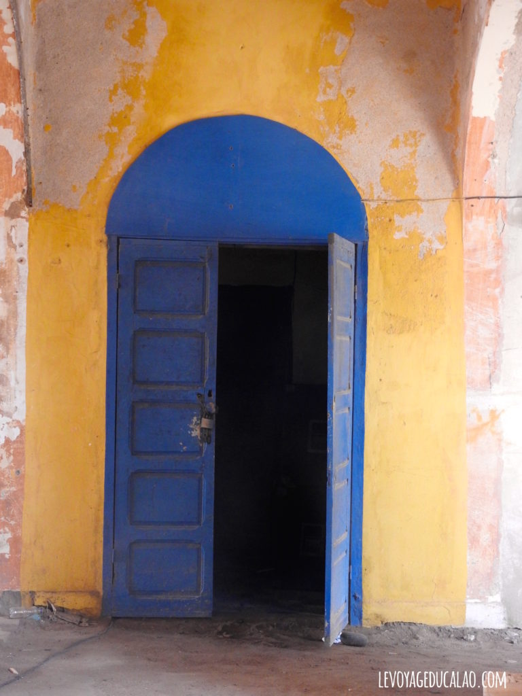
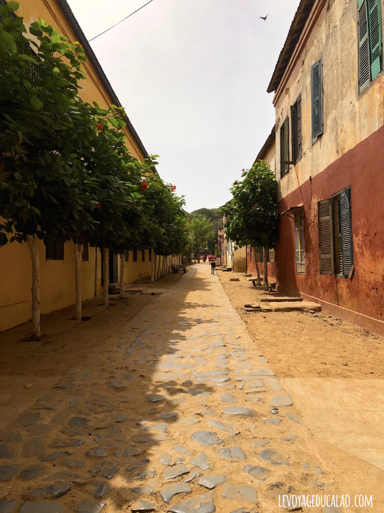

Gorée n’en est pas moins un lieu INCONTOURNABLE à visiter au Sénégal. Elle rappelle à «la conscience humaine le plus grand génocide de l’histoire que fut la traite négrière» disait Léopold Sédar Senghor, premier Président du Sénégal indépendant. Au fil de ses ruelles étroites, Gorée vous révèle sa tragique histoire, entre esclavage et colonialisme, mais aussi la beauté de ses remarquables bâtisses colorées et vestiges du passé. il y a plusieurs restaurants sur l’île, la plupart font face à l’embarcadère et la petite plage. Privilégiez plutôt un lieu plus isolé. Nous avons testé l’Amirauté, à côte de la maison de l’amiral d’Estrées, à deux pas de la Maison des Esclaves. L’endroit est paisible, la carte variée (même si tout n’est pas disponible). Et cerise sur le gâteau, quelques pélicans en liberté sauront occuper vos enfants pendant que vous terminez tranquillement votre repas

L’île de Gorée fait partie de ces haut-lieux touristiques faciles à visiter où tout est bien organisé. Ce qui est rare en Afrique de l’Ouest ! Depuis Dakar, il suffit de se rendre au port maritime, dans le quartier du Plateau à proximité de la superbe gare Art Déco (en cours de rénovation) pour embarquer à bord d’une chaloupe qui vous mènera sur l’île en moins de 20 minutes. Il y en a environ toutes les heures.
La traversée coûte 5200F CFA pour les adultes (8€) et 2700F CFA pour les enfants de moins de 10 ans (4€). Les résidents africains payent 2700F CFA par adulte et 1700F CFA par enfant. Une fois sur l’île, il faudra aussi vous acquitter d’une taxe touristique d’un montant de 500F CFA par adulte (0,75€).
Si vous souhaitez bénéficier des services d’un guide, il vous en coûtera 8000F CFA supplémentaire (12€) mais notez-bien que ce n’est pas une obligation. Etre accompagné par un guide va vous permettre d’aller à l’essentiel et de comprendre, dans les très grandes lignes, l’histoire de Gorée. Mais dans la mesure où ils sont payés au pourboire, ils sont pressés de finir la visite avant même de l’avoir commencé, ce qui est assez frustrant si tout comme moi, vous aimez poser mille questions pour tout comprendre et tout savoir.
Il y a plusieurs restaurants sur l’île, la plupart font face à l’embarcadère et la petite plage. Privilégiez plutôt un lieu plus isolé. Nous avons testé l’Amirauté, à côte de la maison de l’amiral d’Estrées, à deux pas de la Maison des Esclaves. L’endroit est paisible, la carte variée (même si tout n’est pas disponible). Et cerise sur le gâteau, quelques pélicans en liberté sauront occuper vos enfants pendant que vous terminez tranquillement votre repas